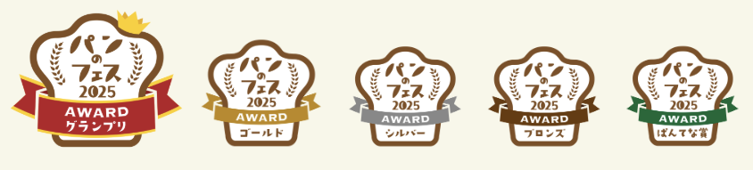
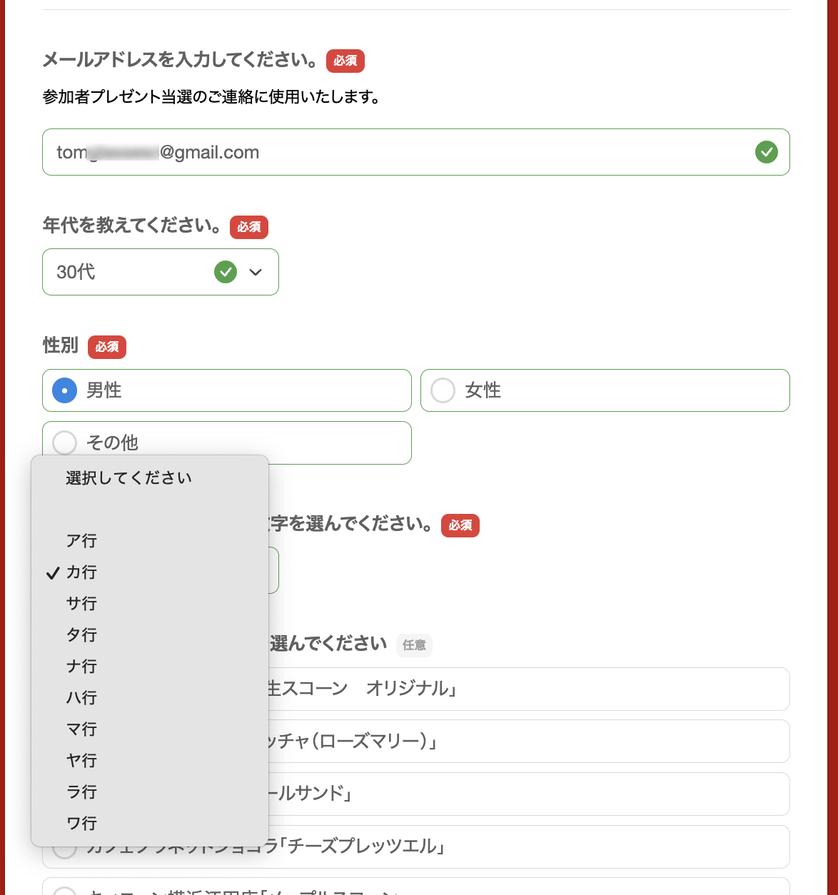
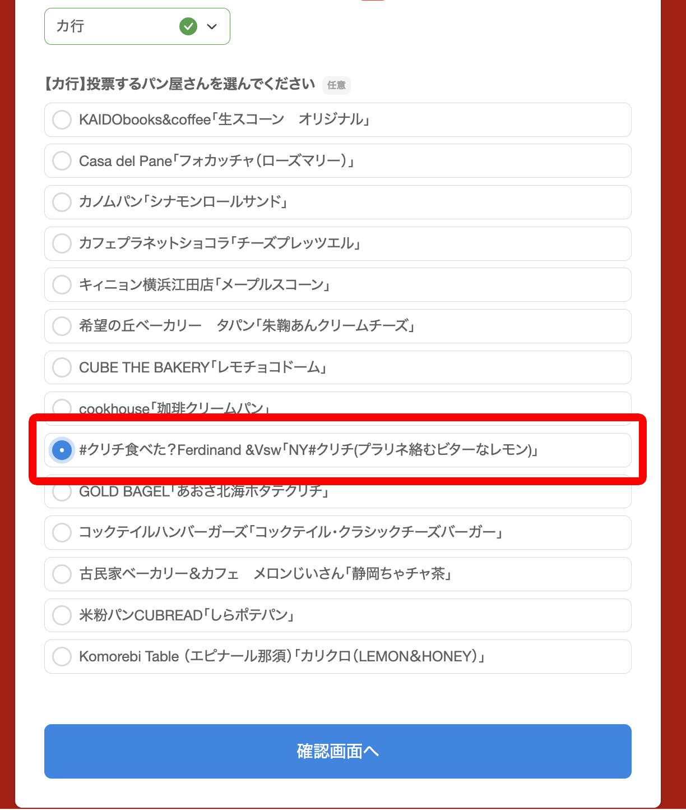
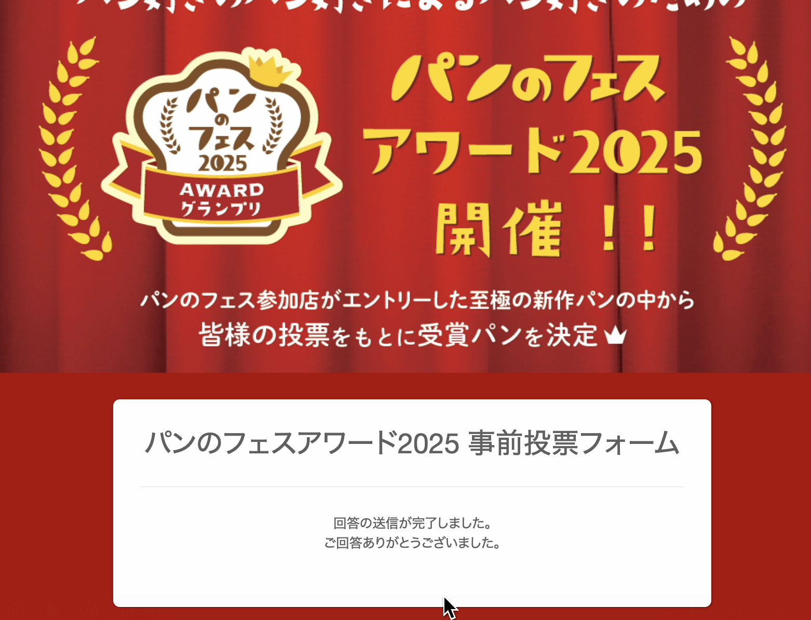

【パンのフェス2026】横浜赤レンガに出店決定！🍞✨

みなさんに嬉しいお知らせです！
この度、日本最大級のパンの祭典
「パンのフェス2026 in 横浜赤レンガ」
への出店が決定いたしました！🎉
今年もあの憧れの舞台で、みなさんに美味しいパンをお届けできることを、スタッフ一同とても楽しみにしています。
今回の勝負パンはこれだ！ 「NY#クリチ」🍞
今回、私たちが自信を持って送り出すエントリーパンをご紹介します。
NY#クリチ（プラリネ絡むビターなレモン）
竹炭を練り込んだ黒白ストライプのモード系バンズ。ほろ苦いレモンピール香るクリームチーズに、香ばしいキャラメリゼナッツのプラリネを合わせました。
ひと口で広がるのは、赤レンガの午後に忘れられない
“静かな衝撃”
これまでの常識を覆す、新たなパンのカタチをぜひ体験してください！
【応援のお願い】 事前投票がスタートしています！🏆
パンのフェスでは、来場者のみなさんの投票でNo.1パンを決定する
「パンのフェスアワード2025」
が開催されます！
私たちの「NY#クリチ」を応援していただける方は、ぜひ以下のリンクより事前投票をお願いいたします🙏✨
🔗 投票はこちらから
🏆 パンのフェスアワードとは？
各パン屋さんが自慢のパンをエントリーし、
来場者の投票でNo.1パンを決定
する熱いイベントです！🔥

🏅 賞の構成
エントリーパンの中から、以下の賞が選出・表彰されます。
- グランプリ （1店）
- ゴールド （2店）
- シルバー （3店）
- ブロンズ （5店）
- ぱんてな賞 （1店・特別賞）
🎁 嬉しい投票特典！
投票いただいた方の中から抽選で
5名様
全国パン共通券3,000円分
をプレゼント！ ぜひ奮ってご参加ください。
投票手順ステップバイステップ
STEP 1
基本情報の入力と「カ行」の選択

フォームにメールアドレス等を入力後、「投票したいパン屋さんの頭文字」で
【カ行】
を選択してください。
STEP 2
「クリチ」を選んで確認画面へ

リストの中から
「#クリチ食べた?Ferdinand &Vsw「NY#クリチ...」」
を探してチェックを入れます。
STEP 3
「送信する」で投票完了！

内容を確認して送信ボタンを押せば完了です。みなさんの1票が力になります！
🍞 パンのフェスとは？ 🍞
全国の人気パン屋さんが集結する、日本最大級のパンイベント！ 🥐✨
毎年多くのパン好きが訪れ、こだわりのパンを楽しめる夢のような3日間です😍
📍 パンのフェスの魅力！
- ✅ 全国の有名パン屋が集結！ 普段行けないお店のパンが一度に楽しめる✨
- ✅ 限定パンが登場！ ここでしか買えない特別メニューも！😋
- ✅ 来場者投票でNo.1パンを決定！🏆 あなたの1票が受賞パンを決める！
- ✅ 横浜赤レンガ倉庫で開催！ 美味しいパン×絶景のロケーション🍃
📅 パンのフェス2026 開催概要
全国の絶品パンを楽しめる「パンのフェス2026」🥖✨
限定パンの食べ比べや、アワード投票も楽しめる3日間です！
📍 会場
横浜赤レンガ倉庫イベント広場
📅 日程
2026年3月6日(金)～8日(日)
🎟 入場
無料エリア＆有料エリアあり！
2026年3月6日～8日は、横浜赤レンガで最高のパン体験を！🍞💛
応援よろしくお願いいたします！✨